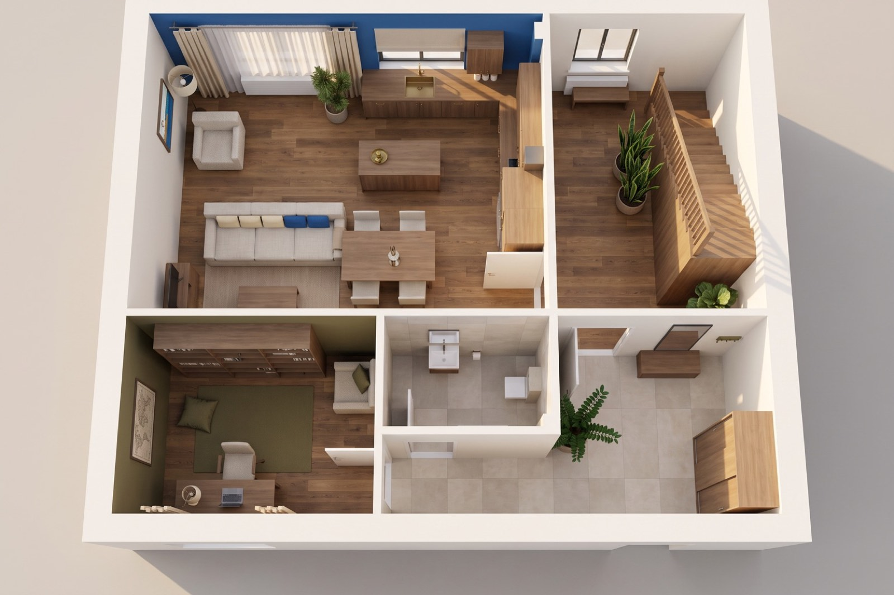
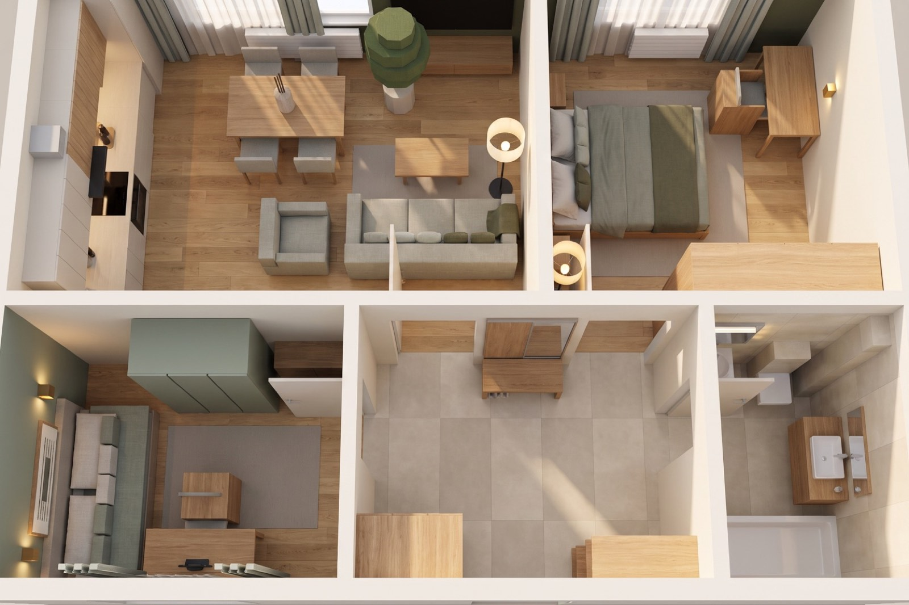
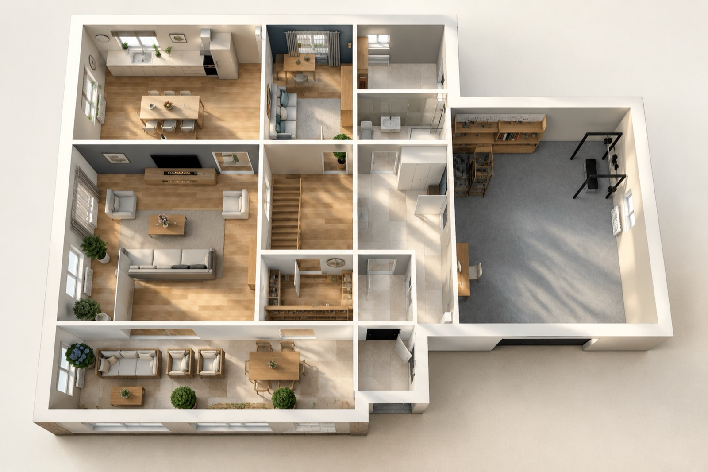
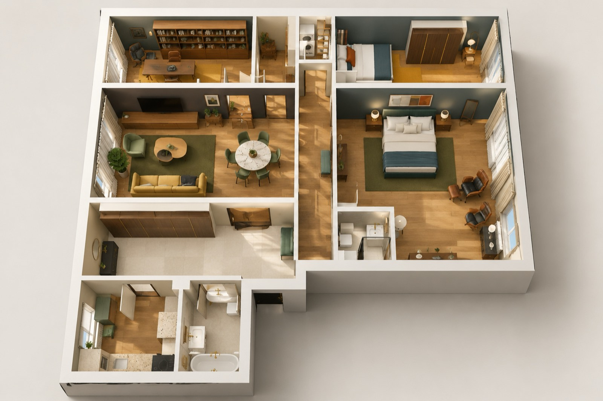
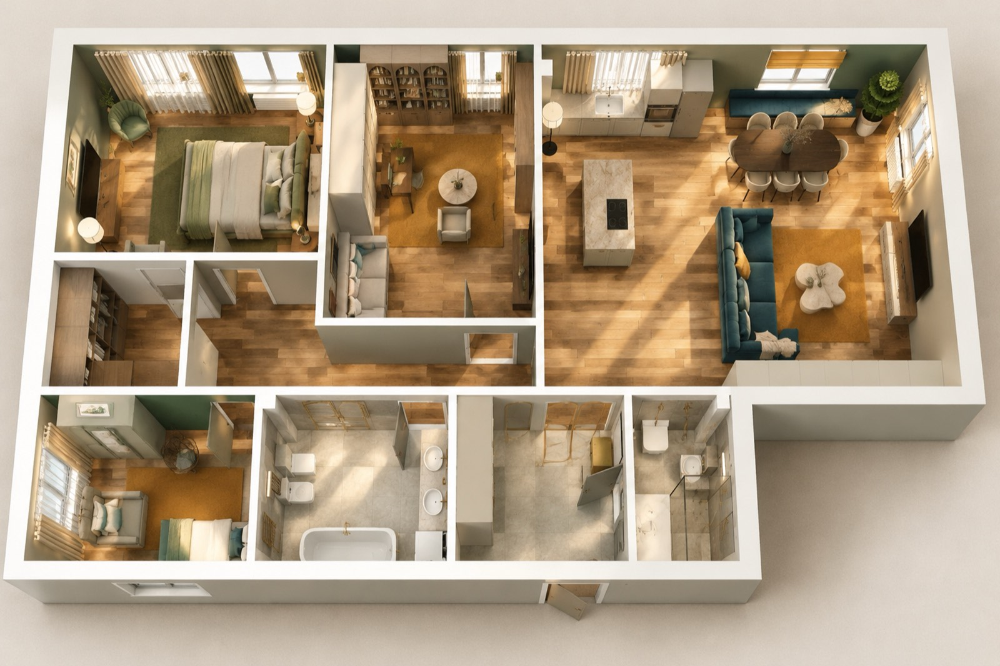
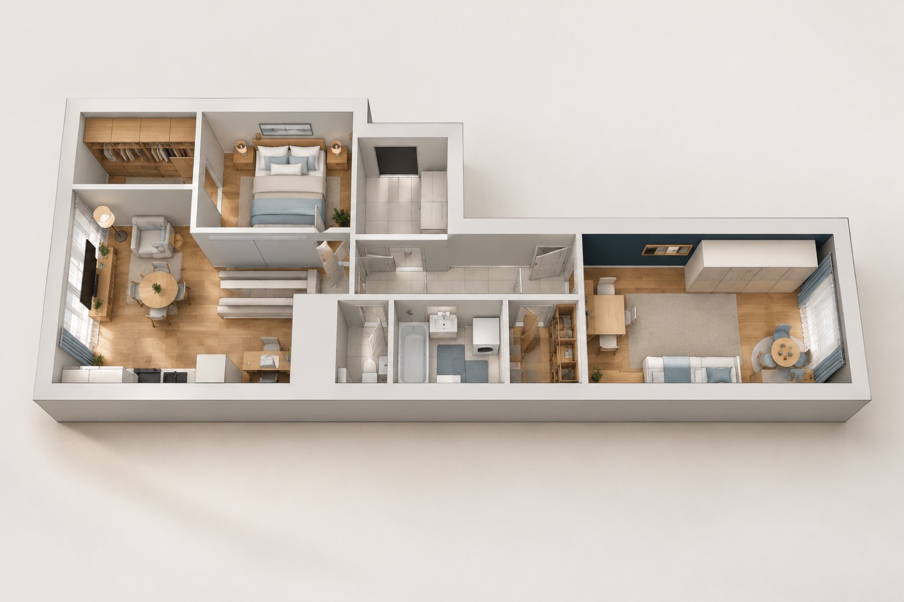
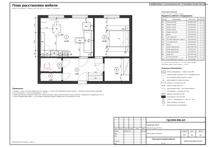
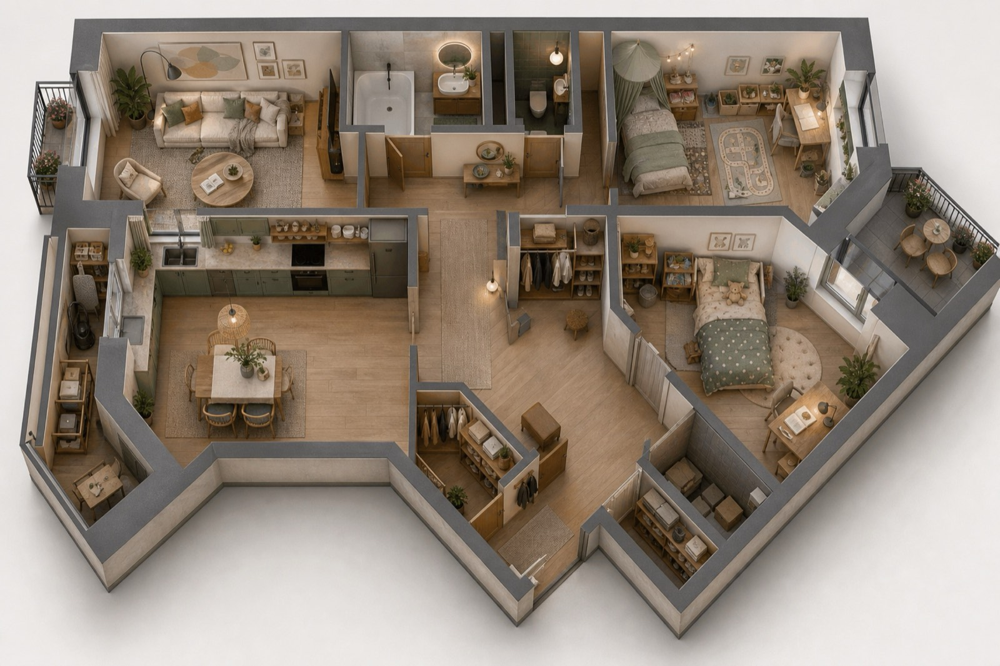

Рабочая документация по ГОСТ
Комплект рабочей документации на квартиру или дом: планировки, развёртки стен, электрика со щитом, вода и канализация, отопление и вентиляция, потолки с узлами, раскладка плитки, отделка, встроенная мебель и смета. Показанные альбомы — предварительные: до контрольного обмера по ним не работают.
Альбом собирает движок — и сам себя проверяет
Объект описан данными один раз: геометрия в миллиметрах, отметки от нуля, проёмы, мебель, инженерные точки, отделка. Каждый раздел выпускает свой специалист движка, а проверка движка прогоняет результат по 928 правилам — у каждого записан источник: пункт ГОСТ, СП или практика бюро.
Данные вместо картинок
Лист нельзя поправить руками в файле: он строится из данных объекта. Поменялась планировка — пересобрался весь альбом, и смета вместе с ним.
Проверка с пунктом норматива
Каждое правило ссылается на источник. Нарушение выводится с адресом: лист, элемент, что именно не так и куда смотреть в норме.
Блокеры не уходят в печать
Проём не помещается в стену, содержимое вылезло за край листа — выпуск останавливается. Блокеров на выдаче во всех девяти альбомах: 1 (квартира 65 м²). Остальное, что находит проверка, — открытые вопросы и рекомендации, а не брак: они собраны на листе «Открытые вопросы» в начале альбома. Подписей проверяющего и нормоконтролёра на листах нет — об этом ниже, в разделе о честности выпуска.
Что движок поймал за собой на этих объектах
Дверь в примыкающей стене
Два проёма попадали на стык стен — дверную коробку туда не поставить. Поймано до выпуска, проёмы сдвинуты.
Щит не влезал в формат
Восемнадцать групп уходили за край листа, подписи сжимались до нечитаемых. Однолинейка научилась делиться на листы по числу групп.
Титул стоял 33-м листом
Ядро не читало признак обложки, и титульный лист оказывался в середине альбома. Теперь он первый, а ведомость чертежей пересчитывается сама.
Марки сноса спорили с дверями
И то и другое обозначалось буквой «Д» — в одном альбоме одна буква не может значить два разных предмета.
Что в альбоме ещё не проверено — записано на листах
В двух наших альбомах размеры сняты со скана, а высота потолка принята без замера. Эти и другие допущения вынесены в реестр открытых вопросов; у принятых и предложенных значений на листах стоит знак «*», а вопросы, на которые отвечают обмер, обследование или документ, собраны в задание на контрольный обмер. Комплекты предварительные. Листов с пометкой «не для производства работ»: Квартира с эркерами: 121 из 121; Трёхкомнатная квартира: 94 из 94.
Посмотреть листы целиком
Это не картинки для сайта, а листы выпуска: со штампом, размерными цепочками, ведомостями и примечаниями. Новые проекты — первыми. Комплекты предварительные, до контрольного обмера: на листах напечатано «не для производства работ».









Свой проект — с того же места
Бриф — около 10 минут, начать можно с рассказа голосом: размеры, фото, пожелания. Первый вариант проекта — до 48 часов от получения брифа с планом (дом — до 72); предоплаты нет, альбом остаётся у вас в любом случае.
Автор проекта — дизайнер-архитектор Кырлан Александр. В основной надписи листов этих альбомов указана его фамилия; телефона и почты на листах нет — они на странице контактов.